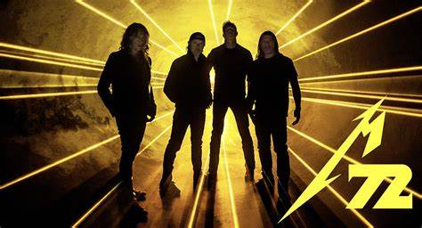
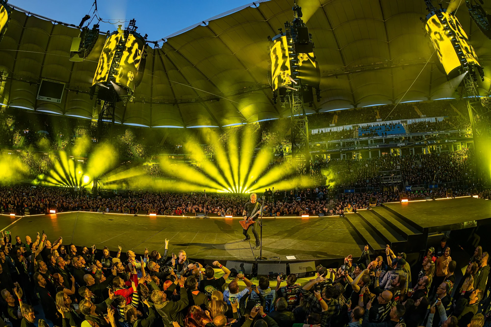
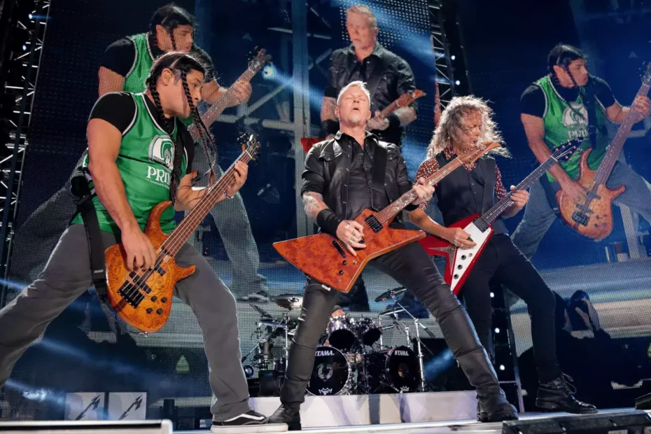

Ultimas y proximas presentaciones en vivo

Proximas presentaciones
- 19 de abril de 2025 en el JMA Wireless Dome, Syracuse, Nueva York, EE. UU.
- 24 de abril de 2025 en el Rogers Centre, Toronto, Ontario, Canadá.
- 26 de abril de 2025 en el Rogers Centre, Toronto, Ontario, Canadá.
- 1 de mayo de 2025 en el Nissan Stadium, Nashville, Tennessee, EE. UU.
- 3 de mayo de 2025 en el Nissan Stadium, Nashville, Tennessee, EE. UU.
Ultimas presentaciones que dieron
- 19 de septiembre de 2024 en el Rock in Rio, Río de Janeiro, Brasil.
- 14 de marzo de 2025 en la Ciudad de México, México, como parte de la gira "M72".
Algunas fotos


Volver al inicio